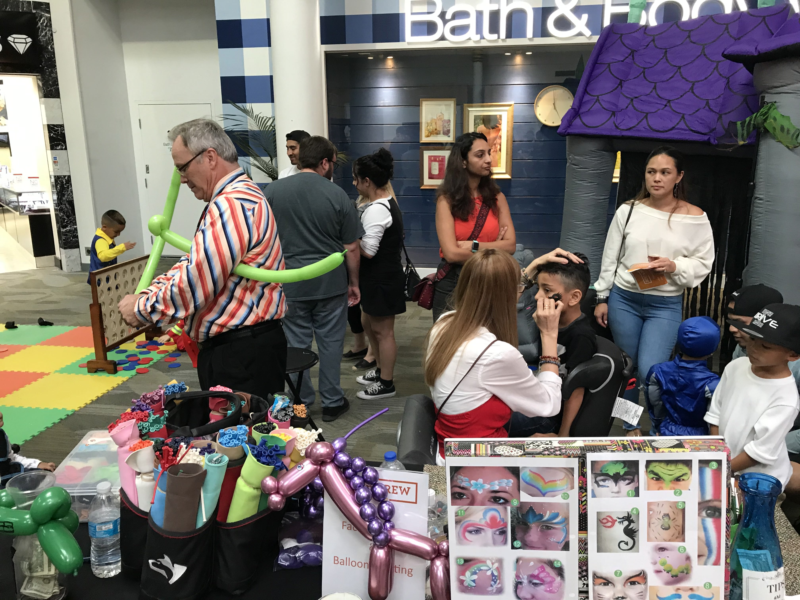
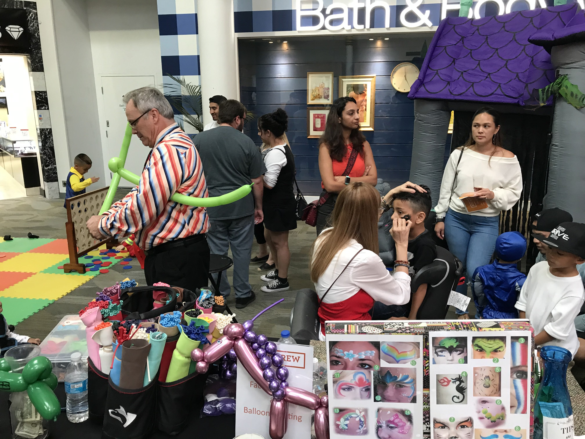
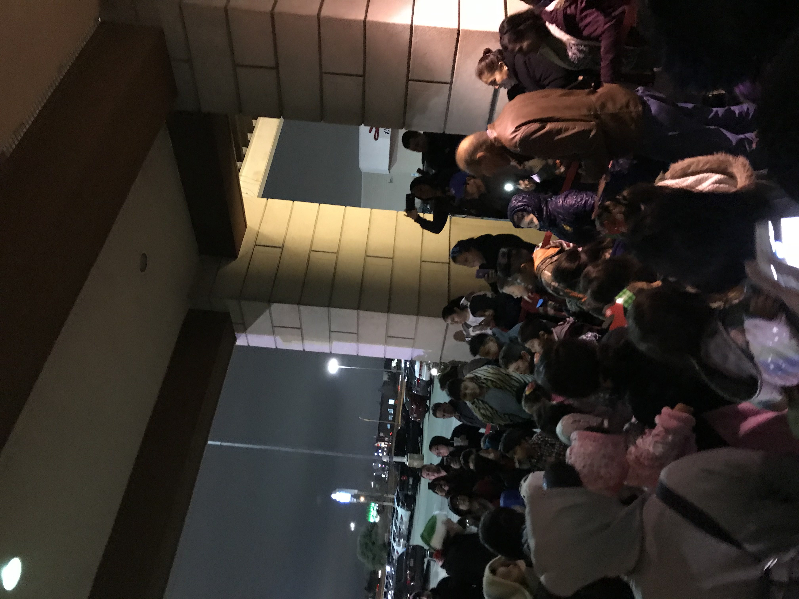
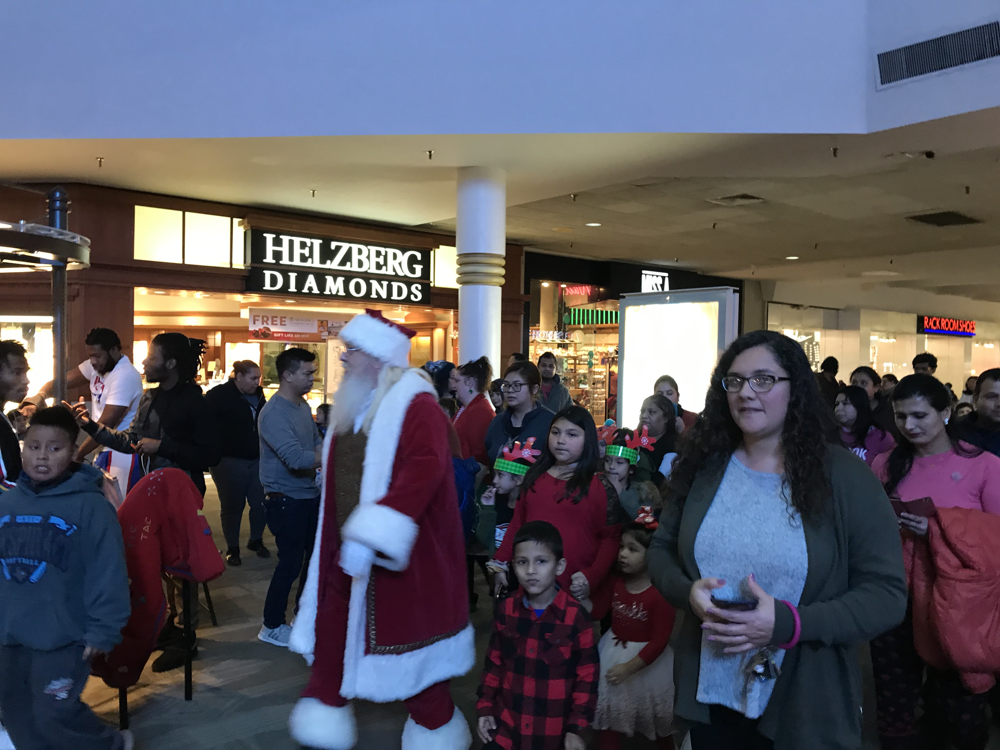
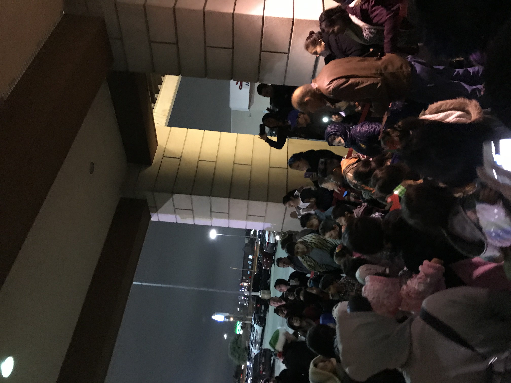
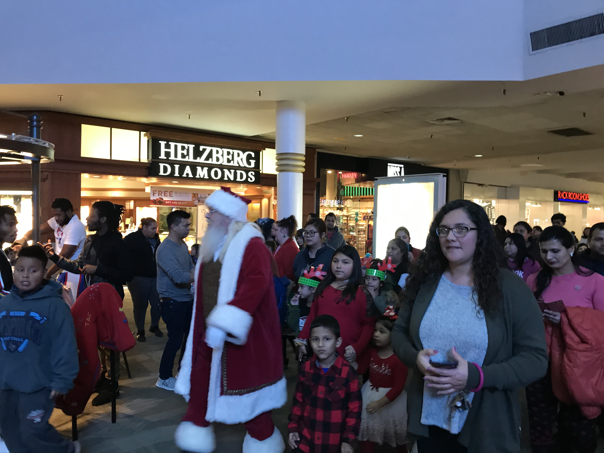

Marketing Campaigns
Boo 'n Brew
One of Irving Mall's signature events, Boo 'n Brew, was the first major event that I was put in charge of.
The event's objective was to hold a one day Halloween festival catered to both children and adults with alcohol sampling and various activities that were free to the public.
Our budget was rather flexible, substantially due to our strong list of sponsors.
Hence, we were able to secure several exciting activations such as an adult's/children's costume contest, a passport game, and a pumpkin painting contest with prizes (Amazon Alexa, Nintendo Switch, etc), live music, face painter, balloon twister, alcohol sampling, and a game area.
For such a large scale event, an aggressive digital marketing plan was necessary; I promoted the event consistently with engaging and attention grabbing messages through Falcon.io social media calendar (for Facebook and Instagram), paid media, Emma email, and Sitefinity CMS.
In addition to a marketing plan, I created a meticulous Run of Show via Excel, and a site map on Publisher.
The end result was the event turning out to be a huge success with a turn out of around 300, email list/KidX memberships growing exponentially, sponsors having very positive feedback, and everyone having a spooky good time!
 


Christmas Event Series
The busiest time of the year for malls is Christmas season and Irving Mall especially takes this time very seriously.
The mall had several events leading up to Christmas eve, with some of the most notable being Santa's Arrival and the Christmas Music Performances.
Santa's Arrival was the kickoff to the Santa photo set.
The activations for this special event was old St.
Nick being chauffeured and arriving at the main entrance with a Christmas-red Toyota truck from our Toyota sponsor, an indoor parade leading to the photo set with Santa himself leading the way, and a mini train ride.
Through my print ads and digital promotions on Falcon.io (for Facebook and Instagram), paid media, Emma, and Sitefinity, I attracted around 200 attendees to this event, which led to a strong start for sales at the Santa photo set.
While Santa's Arrival was the start to the holiday season, the Christmas Music Performances really strengthened the feeling of holiday cheer around the mall.
For this event, we secured the local church choir and the local school district's choir and dance teams to perform and spread Christmas joy.
I marketed this event through the same media as Santa's Arrival, and saw exceptional results with around 300 people coming to the center over the course of two days.
 


